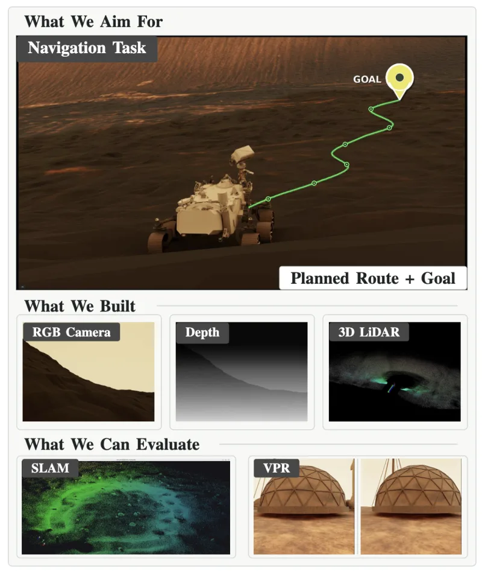
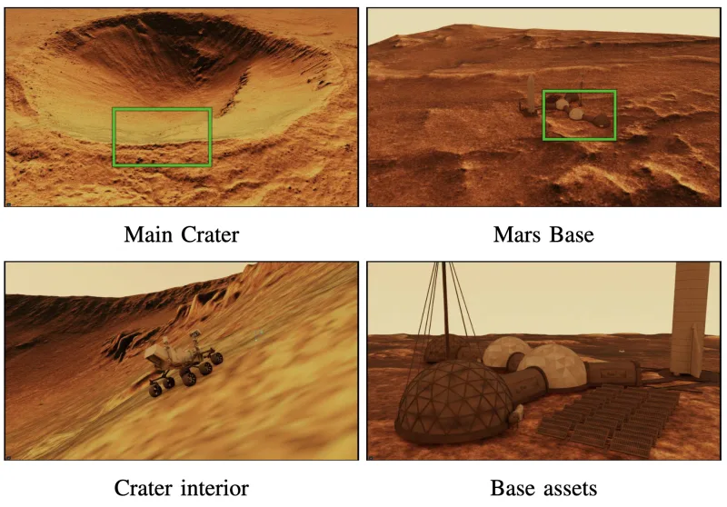
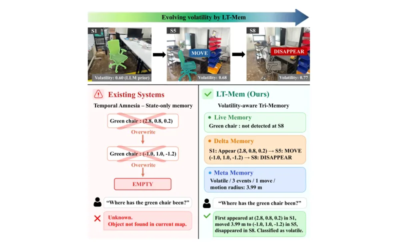
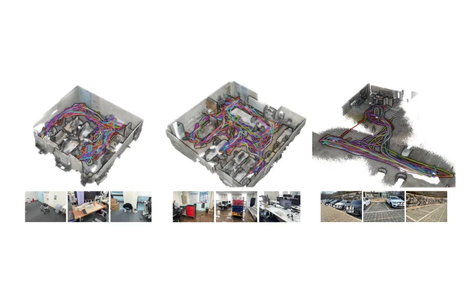
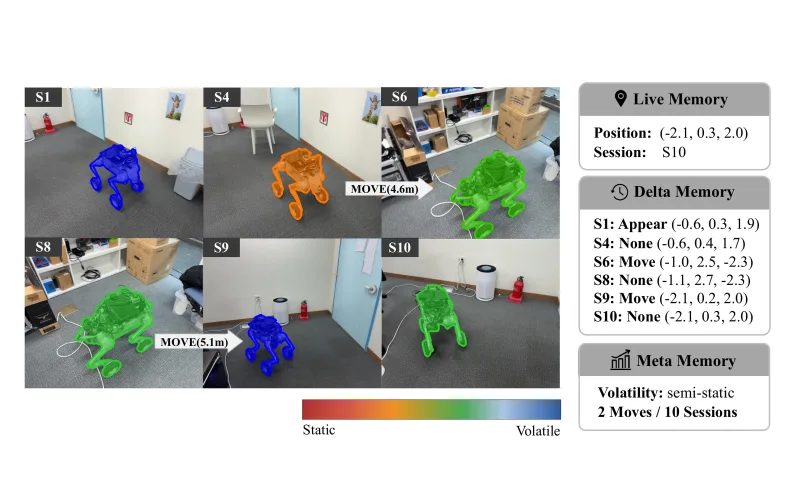
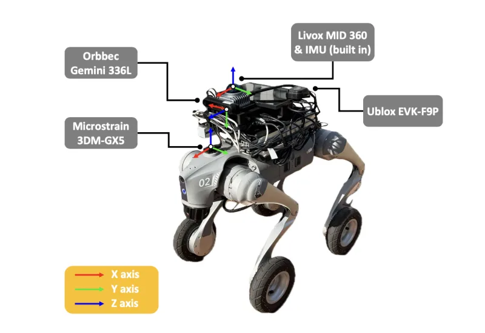
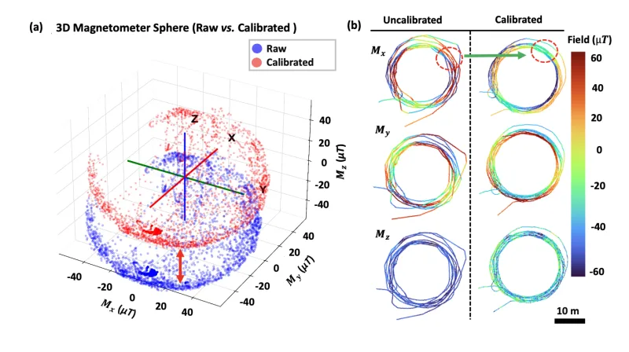
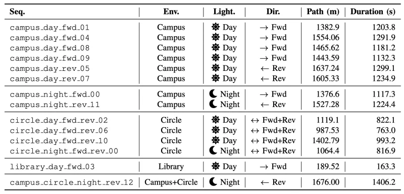
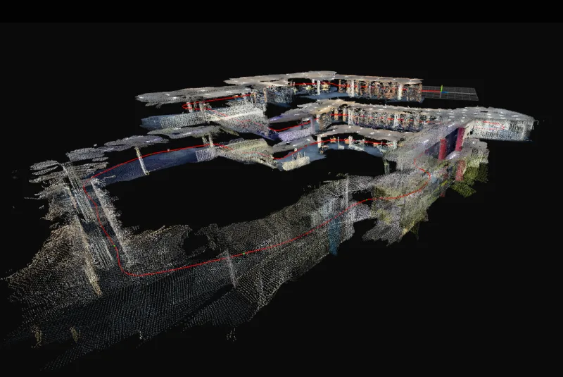
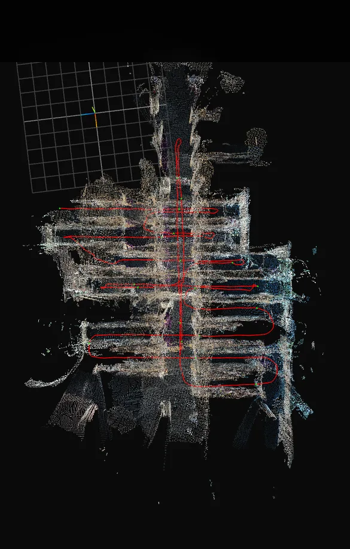

<main class="page">
      <section class="publications-section datasets-section">
        <div class="publications-heading">
          <div>
            <h1>Datasets</h1>
            <p>Datasets, benchmarks, and simulators released by APRL</p>
          </div>
        </div>

        <div class="datasets-layout">
          <aside class="datasets-toc">
            <nav aria-label="Dataset contents">
              <p>Contents</p>
              <ol>
                <li><a href="#marslab-simulator" data-venue="iSpaRo26">MarsLab Simulator</a></li>
                <li><a href="#lt-mem-dataset" data-venue="IROS26">LT-Mem Dataset</a></li>
                <li><a href="#mag4d-slam-dataset" data-venue="IROS26">Mag4D-SLAM Dataset</a></li>
                <li><a href="#scalemaster-dataset" data-venue="ICRA26">ScaleMaster Dataset</a></li>
              </ol>
            </nav>
          </aside>

          <div class="datasets-card-stack">
        <article id="marslab-simulator" class="dataset-card">
          <div class="dataset-card-header">
            <div>
              <h2><a href="https://kimhoyun-robotair.github.io/MarsLab.github.io/#environments">MarsLab Simulator</a></h2>
              <p class="dataset-card-meta"><span class="dataset-venue-label">iSpaRo 2026</span><span>Simulator for synthetic planetary data generation</span></p>
            </div>
            <a href="https://kimhoyun-robotair.github.io/MarsLab.github.io/#environments">Website</a>
          </div>

          <div class="dataset-image-grid dataset-image-grid--contain">
            <a href="assets/datasets/marslab-overview.png"></a>
            <a href="assets/datasets/marslab-environments.png"></a>
            <a href="assets/datasets/marslab-crater-viewpoints.png"></a>
          </div>
        </article>

        <article id="lt-mem-dataset" class="dataset-card">
          <div class="dataset-card-header">
            <div>
              <h2><a href="https://lt-mem.github.io/">LT-Mem Dataset</a></h2>
              <p class="dataset-card-meta"><span class="dataset-venue-label">IROS 2026</span><span>Dataset for lifelong scene understanding and LT-VQA</span></p>
            </div>
            <a href="https://lt-mem.github.io/">Website</a>
          </div>

          <div class="dataset-image-grid">
            <a href="assets/datasets/lt-mem-paper-overview.png"></a>
            <a href="assets/datasets/lt-mem-lt-vqa-environments.png"></a>
            <a href="assets/datasets/lt-mem-tri-memory-example.png"></a>
          </div>
        </article>

        <article id="mag4d-slam-dataset" class="dataset-card">
          <div class="dataset-card-header">
            <div>
              <h2><a href="https://mag4d-dataset.github.io/Mag4d-Dataset/">Mag4D-SLAM Dataset</a></h2>
              <p class="dataset-card-meta"><span class="dataset-venue-label">IROS 2026</span><span>Repeated-traversal multimodal geomagnetic dataset</span></p>
            </div>
            <a href="https://mag4d-dataset.github.io/Mag4d-Dataset/">Website</a>
          </div>

          <div class="dataset-image-grid">
            <a href="assets/datasets/mag4d-slam-dataset-1.png"></a>
            <a href="assets/datasets/mag4d-slam-dataset-2.png"></a>
            <a href="assets/datasets/mag4d-slam-dataset-3.png"></a>
          </div>
        </article>

        <article id="scalemaster-dataset" class="dataset-card">
          <div class="dataset-card-header">
            <div>
              <h2><a href="https://scalemaster-dataset.github.io/">ScaleMaster Dataset</a></h2>
              <p class="dataset-card-meta"><span class="dataset-venue-label">ICRA 2026</span><span>Dataset and benchmark for scale-consistent monocular visual SLAM</span></p>
            </div>
            <a href="https://scalemaster-dataset.github.io/">Website</a>
          </div>

          <div class="dataset-image-grid">
            <a href="assets/datasets/scalemaster-overview.png"></a>
            <a href="assets/datasets/scalemaster-pgo-1.png"></a>
            <a href="assets/datasets/scalemaster-pgo-2.png"></a>
          </div>
        </article>

          </div>
        </div>

      </section>
    </main>
